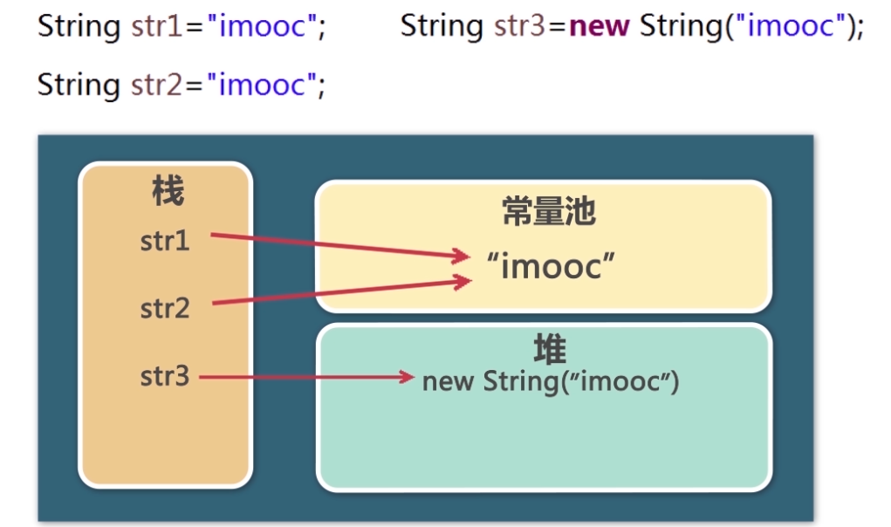

# 工具类
java 给我们提供了一系列的工具类，我们直接使用接可。
# 1、处理异常
对于运行时候产生的错误，Java 提供异常处理机制。
Throwable ：
- Erorr：产生的错误，内存溢出，虚拟机错误等等
- Exception： 可以处理的异常
Exception：
- RunTimeException：空指针异常，数组下标越界，算数异常，类型转换异常等
- IO异常：读写文件产生的异常
- SQL异常：操作数据库产生的异常
（1）try-catch-finally
try 必须与catch 或 finally 组合使用。
int num = 12;
int num1 = 0;
System.out.print(num/num1); // 运行的报错
如果饿哦们知道可能要发生错误的语句，需要包上 try 语句就可以避免产生这种错误。
int num = 12;
int num1 = 0;
try {
System.out.print(num/num1);
} catch(Exception e) {
e.printStackTrace(); // 打印异常
System.out.print("出错啦！");
} finaly {
System.out.print("出错我也要执行!");
}
我们可以选择 catch 的参数，精确的捕获那种类型的错误，常见的有以下几种：
try {
System.out.print(num/num1);
} catch(ArithmetcException e) {
e.printStackTrace();
System.out.print("数学运算异常");
} catch(InputMisatchException e) {
e.printStackTrace();
System.out.print("出错啦！");
} catch(Exception e) {
e.printStackTrace(); // 打印异常
System.out.print("出错啦！");
} finaly {
System.out.print("出错我也要执行!");
}
（2）throw 抛出异常
throw 语句定义抛出异常的类型。
public void method() throws Exceptions1,Exceptions2{
// 可能产生异常的代码
}
看个例子，
void main(String[] args) {
// 处理异常
try {
int result = method(10,0);
} catch (ArithmeticException e) {
System.out.print("数学运算异常");
}
}
// 说明可能要产生的异常
public void method(int num1, int num2) throws ArithmeticException {
return num1/num2;
}
处理自己抛出的异常，通过 throw 关键字，可以抛出异常。
public static void testAge() {
try {
if(age < 18){
throw new Exception("未成年禁止进入！")
}
} catch(Exception e) {
e.printStackTrace();
}
}
# 2、包装类
通过包装类，让基本数据拥有属性，方法。
包装类与基本数据类型的对应关系：
| 基本数据类型 | 对应的包装类型 |
|---|---|
| byte | Byte |
| short | Short |
| int | Integer |
| long | Long |
| float | Float |
| double | Double |
| char | Character |
| boolean | Boolean |
提示
包装类的 API 放在 java.lang 文件中。
（1） 包装类与基本类型之间的转换
// 基本类型 => 包装类型
int num = 10;
Integer integerNum = num;
System.out.println(integerNum == num); // true
// 包装类型 => 基本类型
Integer integerNum1 = 123;
double doubleNum = integerNum1; // 123.0
int intNum = integerNum1; // 123
（2）字符串与基本类型之间的转换
// 数字 => 字符串
String numStr = Integer.toString(num);
// 字符串 => 数字
num = Integer.parseInt("123");
num = Integer.valueOf(numStr);
提示
有于包装类是也是类，默认值为 null。
注意：
这是一个很奇怪的现象，同样的操作，数值不同比较结果完全不通过。
Integer integerNum = 200;
Integer integerNum1 = 200;
System.out.println(integerNum == integerNum1); // false
Integer integerNum = 100;
Integer integerNum1 = 100;
System.out.println(integerNum == integerNum1); // false
// double类型
Double integerNum = Double.valueOf(100);
Double integerNum1 = Double.valueOf(100);
System.out.println(integerNum == integerNum1); // false
# 3、字符串操作类
（1）String
有于 char 类型不能满足我们的日常开发，我们需要借助 String 类来借助开发，提高开发效率。
// 创建
String str = "hello";
String str1 = new String("hello");
// 常见属性
str.length; // 5 返回长度
str.charAt(0) // h 指定位置的一个字符
str.substring(1,3) // el 通过索引截取字符串
getBytes() 方法是字符串与二进制之间的转换。
这是将字符串转化成二进制数组的过程，英文字母占一个字节，也就是对应的ascii码。
String str = new String("aA");
byte[] arr = str.getBytes("GBK"); // 可以不传入编码格式
for(int i = 0; i < arr.length; i++) {
System.out.print(arr[i]+" ");
}
// 97 65
将二进值数据转换成字符串，如果出现乱码情况，可能是编码格式不正确，需要传入正确的编码格式。
String str1 = new String(arr, "GBK");
System.out.print(str1);

（2）StringBuilder
String 具有不可变性，而 StringBuilder 不具备。频繁操作字符串时使用StringBuilder 。
StringBuilder str = new StringBuilder("a");
str.append("b");
System.out.print(str); // ab
← 接口(interface) 集合 →